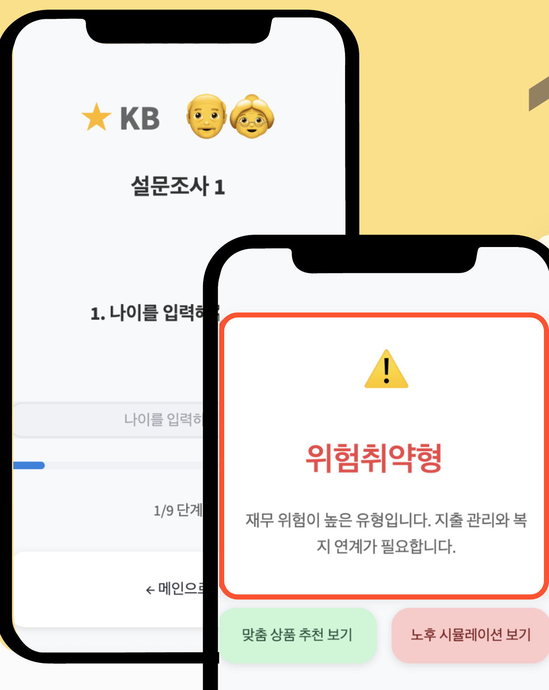
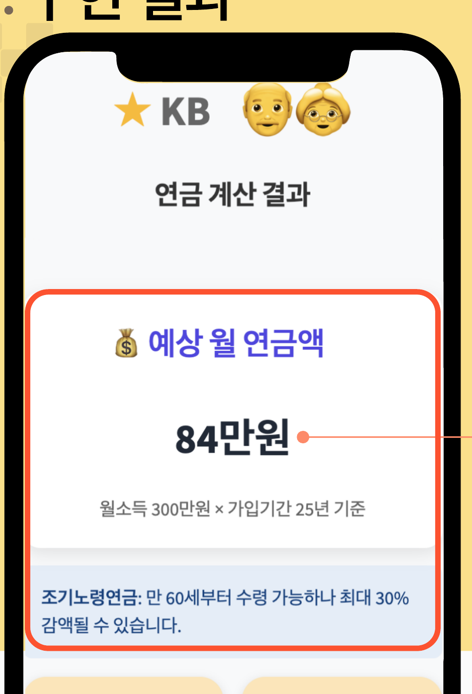
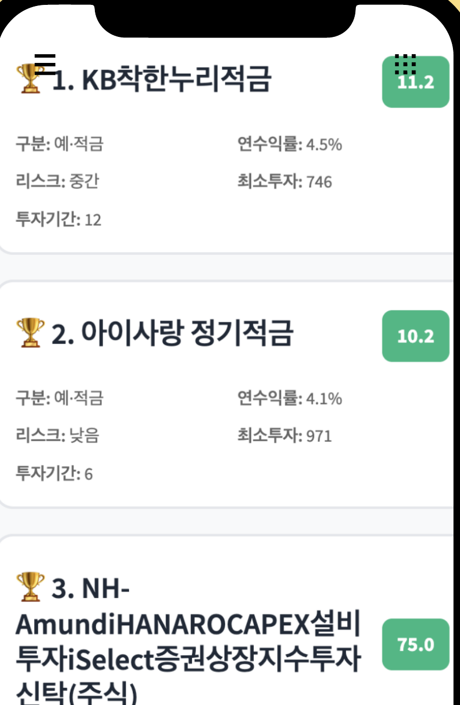
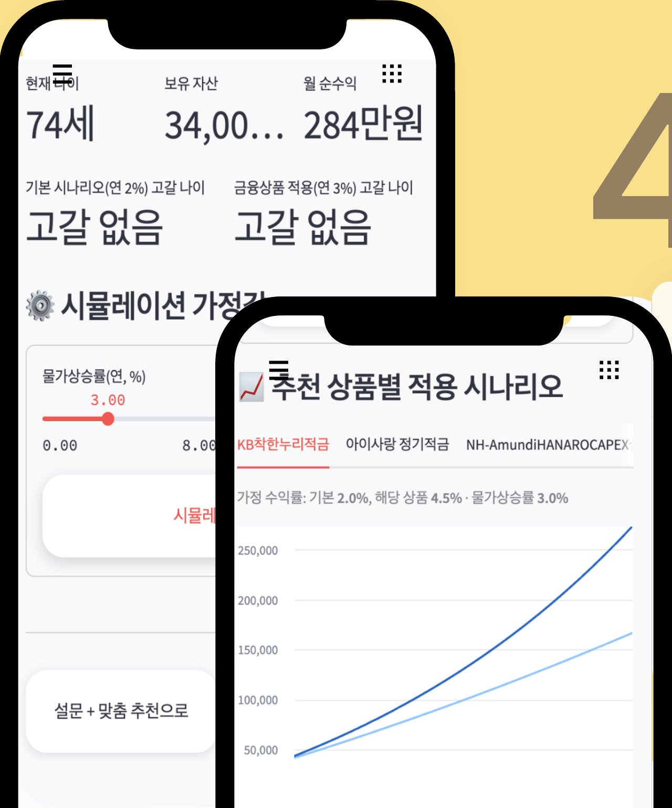

동작 소개
각 프로젝트가 실제로 어떤 화면으로 동작하고, 입력이 어떤 단계를 거쳐 결과가 되는지 정리했습니다. 아래 화면은 모두 실제 구현된 서비스를 캡처한 것입니다.
Samsung Academy LXP
진행 중훈련기관 LMS. 관리자·강사·훈련생이 각자 다른 화면을 쓰며, AI 학습지원 기능이 훈련생 화면에 붙어 있다.


AI 학습 Q&A pipeline
모델 · 핵심 처리모델 호출 전에 권한과 사용량을 차단하고, 생성 뒤에는 실제 자료 범위를 벗어난 인용 번호를 다시 제거합니다.
01질문 입력 — 훈련생이 학습 중 질문을 남긴다.
02호출 전 검사 — 수강 권한 · 입력 길이 1,000자 · 과정 자료 유무 · 일일 한도(전체 500 / 1인 50)를 모델을 부르기 전에 확인한다. 하나라도 걸리면 모델을 호출하지 않는다.
03자료 기반 답변 — 과정 자료(PDF 본문 포함)를 컨텍스트로 Claude API를 호출하고, 답변이 실제 인용한 자료만 링크로 붙인다. 범위 밖 인용 번호는 버린다.
04미해결 질문 이관 — 해결되지 않은 질문은 담당 강사 Q&A로 자동 등록되어 사람에게 이어진다.
운영 주소 lms.samsungax.com — 훈련생 계정이 있어야 접속할 수 있어 위 화면으로 대신한다.
노후애
9문항 설문으로 재무 유형을 진단하고, 예상 연금액 계산 · 맞춤 상품 추천 · 노후 자산 시뮬레이션까지 이어진다.




Finance recommendation pipeline
모델 · 핵심 처리두 입력을 결합합니다: 사용자 설문은 개인 벡터를 만들고, 금융 상품 목록은 가입 제약을 거쳐 비교 가능한 후보 벡터가 됩니다.
01설문 입력 — 나이·가구원수·피부양자·금융자산·투자성향 등 9문항을 단계별로 받는다. 한 화면에 한 문항씩 두고 진행률을 표시한다.
02재무 유형 진단 — 연금·소득·자산·지출 기준으로 정의한 6종 세그먼트(위험취약형·자산운용형·균형형·고소비형·연금의존형·자산의존형) 중 하나로 분류한다. TabNet을 쓴 이유는 개인별 feature attribution이 남아 어떤 항목이 그 판정을 만들었는지 설명할 수 있기 때문이다.
03연금 계산 — 월소득과 국민연금 가입기간으로 예상 월 수령액을 산출하고, 조기노령연금은 만 60세부터 받을 수 있으나 최대 30% 감액된다는 식의 유형별 주의사항을 함께 보여준다.
04제약 필터링 — 최소투자금액·권장투자기간·투자성향으로 애초에 가입할 수 없는 상품을 제거하고, 예상 수익률 기준 상위 10개로 좁힌다.
05유사도 추천 — 예금·펀드처럼 기준이 다른 상품을 최소투자금액·예상수익률·권장투자기간이라는 공통 축으로 스케일을 맞춰 벡터화하고, FAISS IndexFlatL2 완전 탐색으로 사용자 벡터와 가장 가까운 3개를 뽑는다.
06노후 시뮬레이션 — 물가상승률을 0~8% 범위에서 조절해 자산 고갈 시점을 추정하고, 추천 상품을 적용한 시나리오와 기본 시나리오(연 2%)의 자산 추이를 나란히 그린다. 조건을 바꿔 다시 추천받을 수도 있다.
Stay-view
공모전 대상지역과 호텔을 고르면 리뷰에서 뽑아낸 긍정·부정 요약과 항목별 점수를 한 화면에서 보여준다.

Review intelligence pipeline
모델 · 핵심 처리요약은 KoBART로 정보량을 먼저 줄인 뒤 Gemini로 문장 품질을 보완하는 2단계 구조입니다.
01노이즈 제거 — 불용어 사전을 만들어 크롤링 리뷰를 정제하고 유효 리뷰 11만 건을 확보한다.
02감성 + 토픽 분해 — KoBERT로 긍·부정을 판별하고 LDA로 6개 항목에 자동 분류한다.
032단계 요약 — KoBART로 1차 요약한 뒤 Gemini로 다시 다듬어 핵심 3줄로 줄인다. 1차 요약만으로는 문장이 뭉개져 2차를 얹었다.
04유형별 추천 — 첫방문인지 재방문인지에 따라 6개 항목의 가중치를 다르게 적용해 Top-3를 뽑는다.
또박톡
공모전 우수상고령층의 대화를 실시간 자막으로 옮기고, 의료·공공 상담 내용을 쉬운 말 요약과 복약 체크리스트로 정리한다.


실시간 자막 화면에서 파란 글씨를 누르면 쉬운 말로 다시 들려준다 — 식후 → 밥 먹은 뒤, 복용 → 드세요. 요약 화면의 할 일에는 각각 복약 알림이 붙는다.
Private speech pipeline
모델 · 핵심 처리진료·복약 데이터가 외부로 나가지 않도록 전사 이후 요약까지 로컬에서 처리하며, 실시간 자막과 종료 후 요약을 분리했습니다.
01실시간 전사 — AI Hub 노인 음성으로 파인튜닝한 Whisper가 말을 텍스트로 바꾼다. 의료 키워드에 가중치를 준 샘플링으로 학습해 WER 21.2%를 얻었다.
02화자 분리 — Resemblyzer가 나와 상대를 구분한다. 1.2초 슬라이딩 윈도우와 최근 5회 판정 다수결로 순간 오판을 평탄화한다.
03쉬운말 변환 — 전문용어를 쉬운 표현으로 바꾼다. 전사 정확도와 용어 변환을 한 모듈에서 처리하면 서로 간섭해 별도 단계로 분리했다.
04요약과 체크리스트 — Ollama가 대화를 요약해 할 일·필요한 물건·복약 시간으로 구조화하고 알림으로 연결한다.
＊외부 API를 쓰지 않은 이유 — 요약과 쉬운말 변환은 클라우드 LLM이 품질도 속도도 낫다. 그럼에도 로컬에 Ollama 서버를 띄워 붙인 것은, 이 서비스가 다루는 내용이 진료 내용과 복약 지시이기 때문이다. 응답 속도를 양보하는 대신 음성과 대화가 기기를 벗어나지 않는 구조를 택했다. 요약은 통화가 끝난 뒤 처리라 실시간성이 덜 중요했던 점도 함께 고려했다.
어서 와용
신한카드 빅데이터 콘테스트 2024 · 본선 진출가격대·현지인 비중·위치·업종을 슬라이더로 좁힌 뒤, 자연어로 물으면 조건에 맞는 제주 맛집을 이유와 함께 답한다.


Hybrid RAG pipeline
모델 · 핵심 처리벡터 검색의 의미 유사도, 그래프의 관계성, 카드 결제 데이터의 수치 조건을 순서대로 결합해 환각 가능한 후보를 먼저 차단합니다.
01의미 검색 — Ko-SRoBERTa로 질문을 임베딩하고 FAISS로 후보 가맹점을 좁힌다.
02그래프 재정렬 — Restaurant ↔ Location ↔ Cuisine ↔ Tourist_Spot 다중 hop 스키마를 Neo4j에 두고, 위치·업종·관광지 인접성을 동시에 만족하는 후보를 경로 탐색으로 다시 정렬한다.
03결제 데이터 필터 — 신한카드 실 결제 데이터로 가격대와 현지인 비중을 걸러낸다.
04근거만 넘긴 답변 — Gemini 1.5 Flash에 검색 결과만 컨텍스트로 준다. 데이터에 없는 가게는 답변에 등장할 수 없다. 위도·경도를 함께 넘겨 이동시간도 추측이 아닌 좌표로 계산한다.